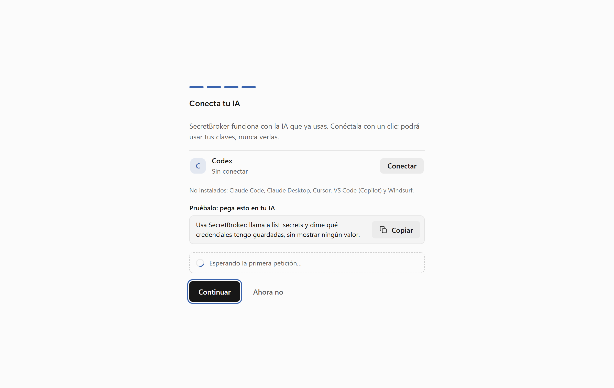
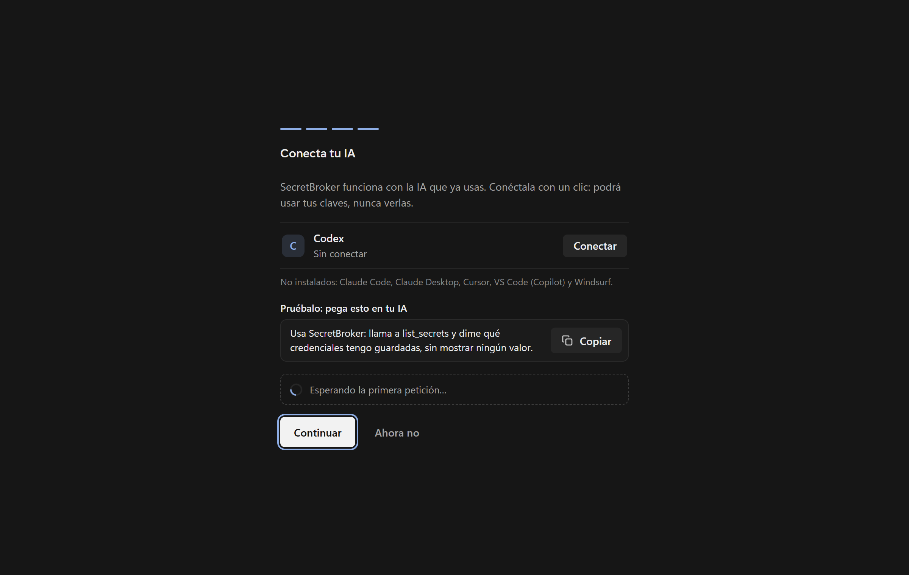
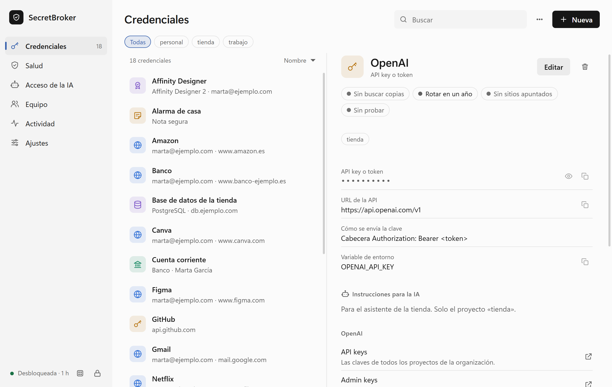
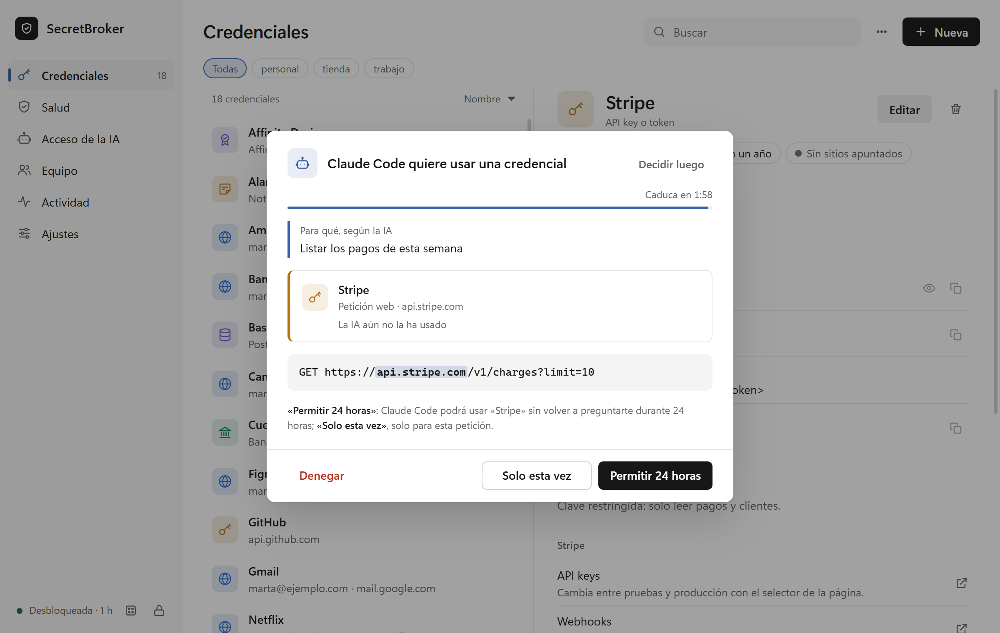
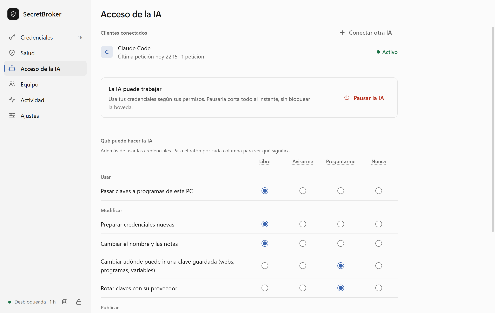
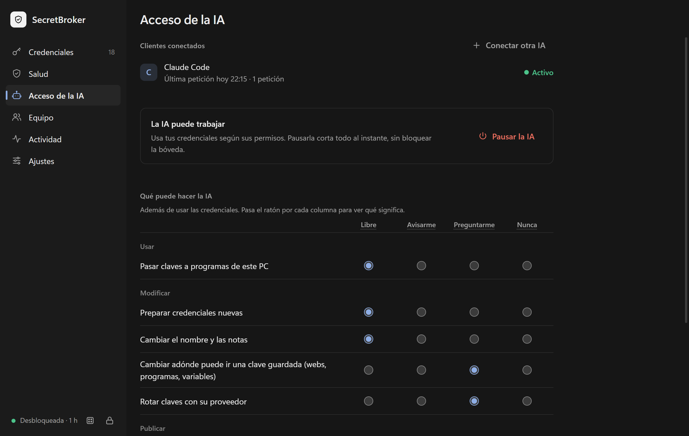
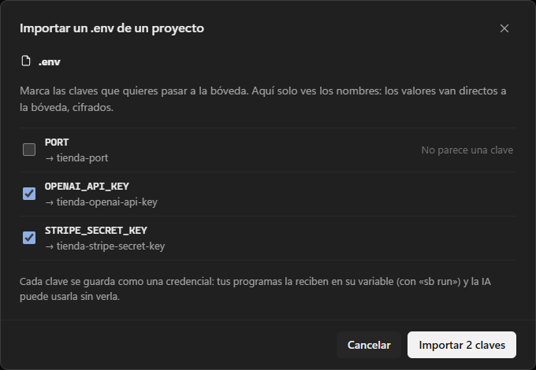
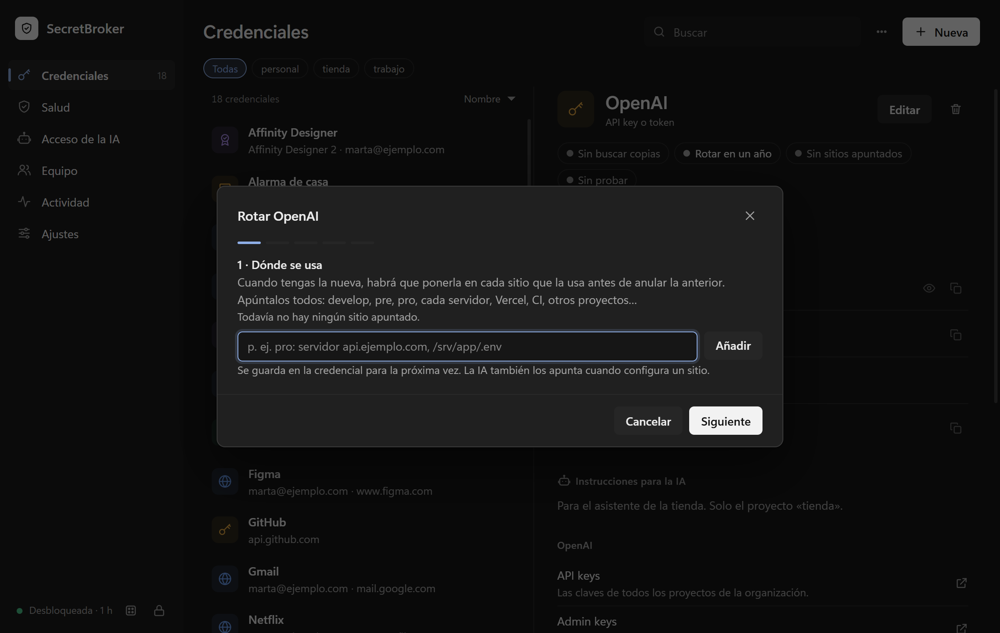
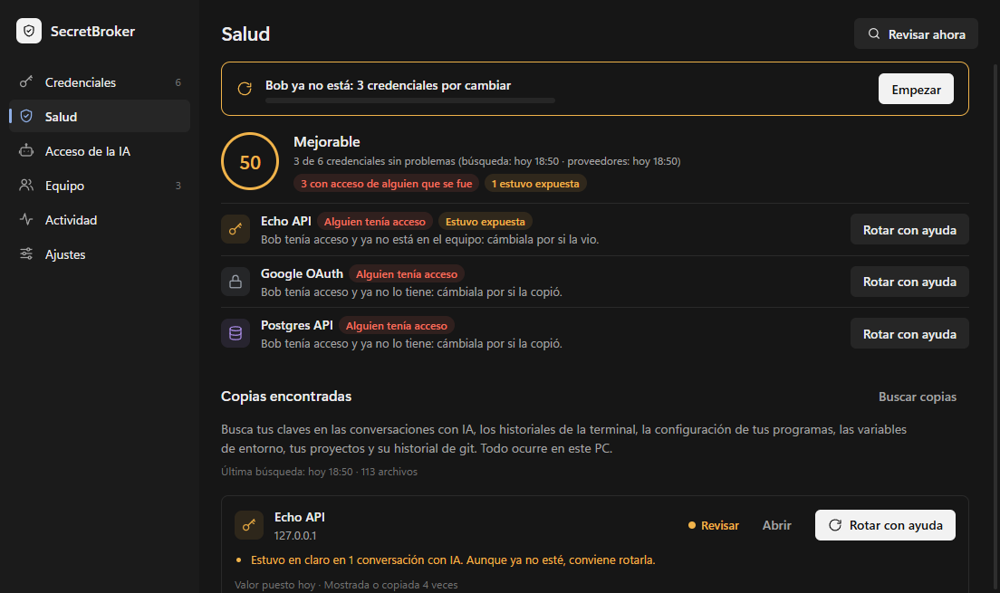

Conectar tu IA
SecretBroker es un servidor MCP en tu propia máquina. La app conecta con un clic los clientes que conoce: Claude Code, Claude Desktop, Cursor, VS Code (Copilot), Windsurf y Codex.
- Abre Acceso de la IA y pulsa Conectar otra IA. La misma pantalla es el último paso de la instalación, y Conectar tu IA en una bóveda vacía.
- Pulsa Conectar junto a tu cliente. Después, haz que se entere: abre una sesión nueva en Claude Code o Codex, reinicia Cursor o Windsurf, recarga VS Code y usa Copilot Chat en modo Agente, o cierra Claude Desktop del todo (también junto al reloj) y ábrelo otra vez.
- Pruébalo. La pantalla te da una frase para pegar en tu IA: «Usa SecretBroker: llama a list_secrets y dime qué credenciales tengo guardadas, sin mostrar ningún valor.» Cuando llega la petición, la app te dice de quién.


En Windows, el instalador ya conecta Claude Code y Claude Desktop si están instalados. El punto de entrada MCP solo escucha en 127.0.0.1, exige un token y comprueba de dónde vienen las peticiones, así que una página web no puede manejarlo.
Añadir una API key
- En Credenciales, pulsa Nueva y elige API key o token.
- Pega la clave. Con los proveedores conocidos (OpenAI, Anthropic, GitHub, Stripe, Cloudflare y otros), la URL de la API, Cómo se envía la clave y la Variable de entorno se rellenan solas.
- Escribe unas Instrucciones para la IA si ayudan: para qué es la clave y cómo debe usarla. La IA lee ese texto, así que no pongas nada secreto. Las Notas privadas son solo para ti.


En Permisos de la IA, cada credencial dice adónde puede ir:
- Webs donde puede usarla: dominios separados por comas. La clave no se envía nunca a otro sitio, solo por HTTPS, y no se siguen las redirecciones.
- Programas que pueden usarla: nombres como
ghopsql. Reciben la clave en las Variables de entorno que indiques. - Pedir tu aprobación: Una vez por sesión, Siempre o Nunca.
Tu agente también puede dejar preparada una credencial con todo menos el secreto. Aparece en la app como «La IA ha preparado esta credencial. Pega la clave y ya se podrá usar.» Los demás tipos son Servidor SSH, Base de datos, Nube (AWS), Otro secreto y Configuración (no secreta), para los identificadores que necesitan tus programas y que no son secretos.
Cómo funcionan las aprobaciones
Cuando el agente usa una credencial que pregunta, la app pasa al frente con la petición: quién la hace, Para qué, según la IA, qué credencial y la petición o el comando exactos.


- Solo esta vez permite esta petición. Permitir 24 horas deja que ese cliente use esa credencial sin volver a preguntar. Denegar la rechaza, y Decidir luego la deja esperando hasta que caduca; entonces el agente recibe un error.
- Ajustes › Seguridad › Recordar aprobaciones fija cuánto dura un «permitir»: 8 horas, 24 horas o hasta que bloquees. Bloquear a mano olvida todas las aprobaciones.
- Una petición por tarea. Un agente puede pedir al empezar todo lo que va a necesitar, con sus motivos, y lo permites de una vez.
- Volver a preguntar si se usa mucho. Incluso una credencial aprobada vuelve a preguntar tras 100 usos en una hora (50, 100, 500 o sin límite). Frena bucles y sustos.
- Si un comando parece que borra, detiene o modifica datos, el diálogo lo avisa antes de que lo permitas.
La página Acceso de la IA


- Aprobadas ahora lista lo que la IA puede usar sin preguntar, y hasta cuándo. Retirar quita una aprobación; Retirar todas, todas.
- Pausar la IA lo corta todo al instante sin bloquear la bóveda: la IA no puede usar, crear ni siquiera listar credenciales. También está en el menú del icono junto al reloj.
- Qué puede hacer la IA, además de usar credenciales: para cada cosa (pasar claves a programas de este PC, preparar credenciales nuevas, cambiar nombres y notas, cambiar adónde puede ir una clave, subir a GitHub) eliges Libre, Avisarme, Preguntarme o Nunca.
Pasar el .env de un proyecto a la bóveda
En la app: Importar un .env de un proyecto, en una bóveda vacía o en el menú ⋯ junto a Nueva. Eliges el archivo, marcas sus claves (solo ves los nombres) y pulsas Importar. Después, Quitar del archivo las saca del .env; las demás variables se quedan.

Desde la terminal, o pidiéndoselo a tu agente, porque el comando no imprime nunca un valor:
sb import .env --deleteGuarda las variables que parecen claves (nombres con KEY, TOKEN, SECRET, PASSWORD…, o URLs con contraseña), deja las demás (PORT, NODE_ENV…) donde estaban y te enseña en la app la lista de nombres para que la confirmes. --all importa todas las variables y --project fija el prefijo de los nombres nuevos. Las claves de proveedores conocidos llegan ya configuradas.
En los dos casos queda en la carpeta del proyecto un archivo .secretbroker con los nombres de las credenciales y ningún valor. Se puede subir al repositorio.
Arrancar tus apps con sb run
.secretbroker dice de qué credencial sale cada variable de entorno:
OPENAI_API_KEY = openai # la plantilla de esa variable en la credencial, o {{value}}
DATABASE_URL = tienda-db:connection_url # un dato concreto de la credencial
aws-prod # todas las variables de entorno de la credencialsb run -- npm run dev # o python app.py, dotnet run…
sb check # ¿están listas todas las credenciales del .secretbroker?- Las variables van de la bóveda al proceso, sin pasar por ningún archivo.
- Solo se entregan las credenciales que tienen Variables de entorno en sus permisos de la IA: es tu forma de decir que esa credencial puede usarse en programas locales.
- La aprobación sigue la de cada credencial, y cada entrega queda en Actividad con el comando y la carpeta.
- Cuando la salida no va a una terminal, por ejemplo si la app la ha arrancado un agente,
sbcensura las claves línea a línea. - Tu código solo lee variables de entorno, así que en producción funciona igual con las que ponga la plataforma. El agente puede guardar una credencial como secret de GitHub Actions sin verla.
Rotar una clave con ayuda
Con los proveedores que dan claves por su API (hoy, Cloudflare y GitLab), Rotar clave pide una nueva, la guarda y la vuelve a subir a los secrets de GitHub donde estaba. La anterior deja de funcionar al momento.
Para todo lo demás, Rotar con ayuda te lleva paso a paso:
- Dónde se usa. Todos los sitios que tienen la clave: develop, pre, pro, cada servidor, Vercel, CI. La app guarda esa lista en la credencial, y la IA la amplía cuando configura un sitio.
- Crea la clave nueva en la web del proveedor, con enlace directo y un nombre sugerido. La actual sigue funcionando, así que no se corta nada.
- Pega la clave nueva y pulsa Probar y guardar. Se prueba con el proveedor antes de sustituir la actual: si no funciona, no cambia nada.
- Ponla en cada sitio y ve marcándolos.
- Anula la clave anterior en el proveedor. Comprobar que ya no funciona confirma que está muerta.


- Bases de datos: la app genera una contraseña y te da el comando exacto para PostgreSQL, MySQL, SQL Server, MongoDB o Redis, o el enlace al panel si es gestionada. Guardar y que la aplique la IA le pasa el trabajo a tu agente, que no ve la contraseña en ningún momento.
- Secretos con un ID (un cliente OAuth, un ID de aplicación): el asistente pregunta si el ID ha cambiado y mantiene los dos a la par.
- Una rotación a medias no se olvida: la credencial indica lo que falta.
- Recordatorios: en cada credencial, o en Ajustes › Seguridad › Recordar rotar las claves. Las fechas de caducidad avisan 14 días antes.
- Para un proveedor que la app no conoce, Pedir una guía a la IA. La app la marca como escrita por la IA, con sus fuentes: comprueba los enlaces antes de seguirla.
Encontrar claves filtradas
Cada credencial indica si sigue estando solo en la bóveda. Salud › Buscar copias busca tus claves, en tu PC, en:
- las conversaciones con IA (Claude Code y Codex) y los historiales de la terminal (PowerShell, bash);
- la configuración de programas como
.claude.json,.npmrc,.awsy.ssh, y las variables de entorno; - las carpetas de tus proyectos y su historial de git. Las carpetas donde has usado Claude Code se añaden solas; Ajustes › Copias de tus claves › Carpetas de proyectos añade más.
También reconoce las formas en JSON, en URL y en base64, y después de la primera vez solo lee lo que ha cambiado. Por defecto se ejecuta al desbloquear, como mucho cada 12 horas. Nada de lo que lee sale de tu PC.

Con cada copia: Ver en qué archivos (tras confirmar que eres tú), Borrar de este archivo, que pone [REDACTED:nombre] en su lugar y deja un .secretbroker.bak al lado, Borrar la copia, o Ignorar si es un archivo de pruebas. Si la IA ya ha visto la clave, la app lo dice: rótala.
Comprobar que las claves funcionan (Ajustes › Seguridad, cada día por defecto) prueba cada clave con una llamada de solo lectura a su propio proveedor. Si una clave que funcionaba deja de hacerlo de repente, lo normal es que la hayan revocado tras una filtración. La página de privacidad detalla qué se envía.
Lo que puede llamar el agente
| Herramienta | Qué hace |
|---|---|
list_secrets | El catálogo: nombres, notas y para qué es cada credencial. Sin valores. |
http_request | Una petición HTTPS a un dominio permitido, con la clave añadida automáticamente o mediante {{value}}, {{username}} y {{password}}. |
ssh_exec, ssh_upload, ssh_download | Comandos, también con sudo, y archivos por SFTP. |
run_command | Ejecuta un programa permitido (gh, psql, aws…) con la credencial en su entorno. |
request_access | Pide de una vez, al empezar una tarea, todas las credenciales que va a necesitar. |
create_credential, update_credential | Prepara una credencial sin su secreto, o cambia nombres, notas y permisos. Lo que amplía adónde puede ir una clave espera tu aprobación. |
check_credential, credential_activity | Si una clave sigue funcionando, su antigüedad y su historial reciente. Sin valores. |
rotate_credential, delete_credential | Pide una clave nueva al proveedor, o propone borrar una credencial. Lo confirmas tú. |
push_github_secret | Guarda una credencial como secret de GitHub Actions, cifrada con la clave del repositorio. |
Ninguna herramienta devuelve un valor secreto, y la salida se censura antes de que la vea el agente.
Límites que conviene conocer
- Un programa permitido en
run_command, o arrancado consb run, recibe la clave en claro. Un agente que pueda escribir y ejecutar código en un programa así,node -eopythonpor ejemplo, puede sacarla. - La censura hace lo que puede con las transformaciones que conoce. Un destino permitido que devuelva los datos con una codificación rara, o uno que controle el agente, puede filtrar una clave. Mantén cortas las listas de dominios.
- Una credencial permitida para todo el día sirve para cualquier operación que permita durante ese tiempo.
- No ejecutes nunca tu agente de IA como administrador: eso anula el aislamiento del servicio.
La página de seguridad lo cuenta entero.
Última actualización: 18 de noviembre de 2026